Demonstrate Interface Management Procedures
Video Walkthrough: We have created a video demonstrating this experiment where we perform the procedure and explain the steps. Click here to watch on YouTube
Deploy Network Interface
1. Deploy N1 Interface (UE ↔ AMF)
- Action: Click on "N1" in the left sidebar palette.
- Observation:
- Canvas: UE, gNB, and AMF appear. A blue connection (N1/NAS) connects UE to gNB, and connected to AMF. AMF connects to the Service Bus.
- Right Panel: Shows "N1 Interface Configuration" (UE → AMF).
- Logs:
N1 Interface deployed successfully.
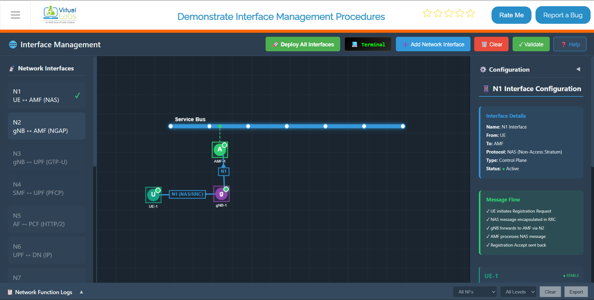
Fig: N1 Interface Deployment
2. Deploy N2 Interface (gNB ↔ AMF)
- Action: Click on "N2" in the left sidebar.
- Observation:
- Canvas: Visually reinforces the gNB to AMF connection (NGAP).
- Right Panel: Shows "N2 Interface Configuration" (gNB → AMF).
- Logs:
N2 Interface configured successfully(uses existing N1 topology).
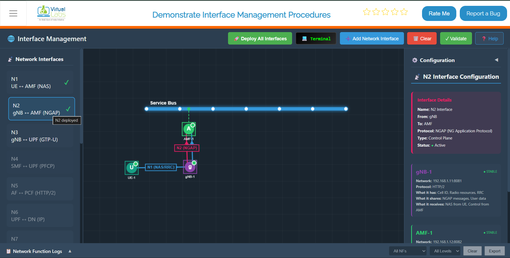
Fig: N2 Interface Deployment
3. Deploy N3 Interface (gNB ↔ UPF)
- Action: Click on "N3" in the left sidebar.
- Observation:
- Canvas: A UPF appears. An orange line (N3 Tunnel) connects gNB to UPF. The Data Network (Internet) appears connected to UPF.
- Right Panel: Shows "N3 Interface Configuration" (gNB → UPF).
- Logs:
N3 Interface deployed successfully(Data Path established).
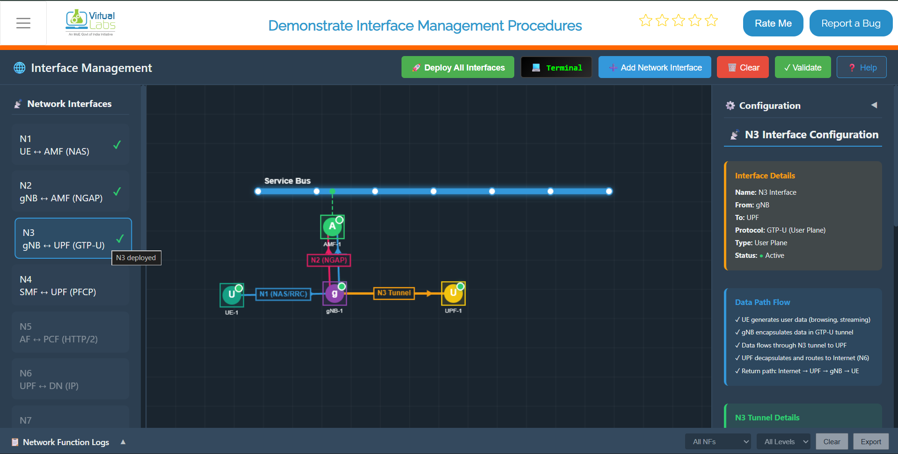
Fig: N3 Interface Deployment
4. Deploy N4 Interface (SMF ↔ UPF)
- Action: Click on "N4" in the left sidebar.
- Observation:
- Canvas: An SMF appears. A red line (N4) connects SMF to UPF. SMF connects to the Service Bus.
- Right Panel: Shows "N4 Interface Configuration" (SMF → UPF).
- Logs:
N4 Interface deployed successfully.
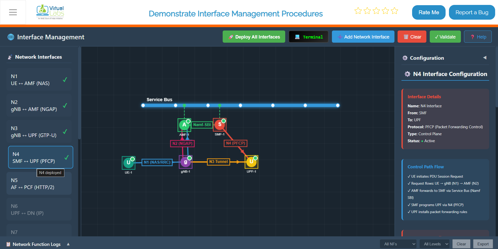
Fig: N4 Interface Deployment
5. Deploy N5 Interface (AF ↔ PCF)
- Action: Click on "N5" in the left sidebar.
- Observation:
- Canvas: An AF (Application Function) and PCF (Policy Control Function) appear. AF connects to PCF. Both connect to the Service Bus.
- Right Panel: Shows "N5 Interface Configuration" (AF → PCF).
- Logs:
N5 Interface deployed successfully.
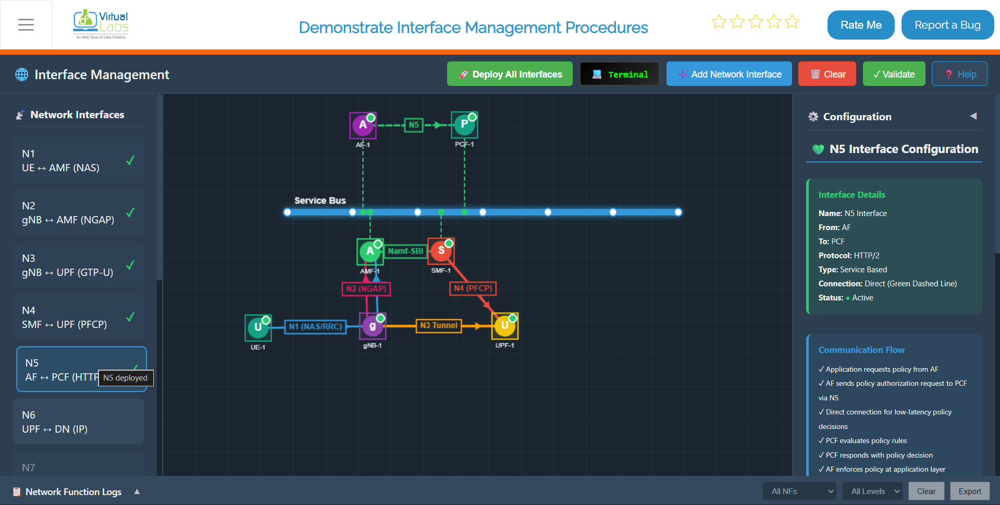
Fig: N5 Interface Deployment
6. Deploy N6 Interface (UPF ↔ DN)
- Action: Click on "N6" in the left sidebar.
- Observation:
- Canvas: Reinforces the connection between UPF and Data Network (Internet).
- Right Panel: Shows "N6 Interface Configuration" (UPF → DN).
- Logs:
N6 Interface deployed successfully.
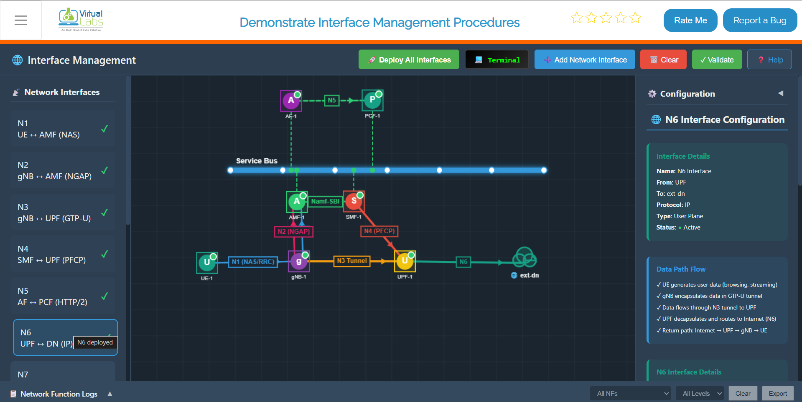
Fig: N6 Interface Deployment
7. Deploy N7 Interface (SMF ↔ PCF)
- Action: Click on "N7" in the left sidebar.
- Observation:
- Canvas: Updates connections between SMF and PCF (Logic).
- Right Panel: Shows "N7 Interface Configuration" (SMF → PCF).
- Logs:
N7 Interface deployed successfully.
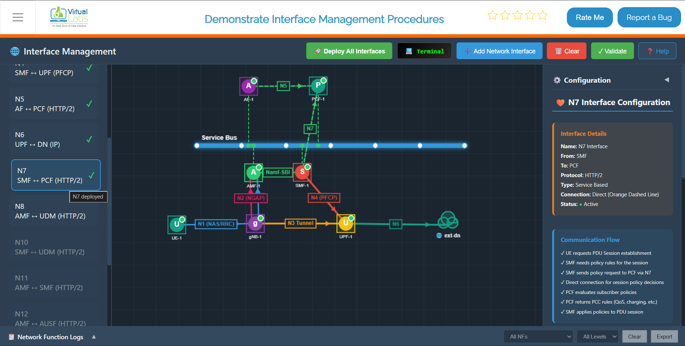
Fig: N7 Interface Deployment
8. Deploy N8 Interface (AMF ↔ UDM)
- Action: Click on "N8" in the left sidebar.
- Observation:
- Canvas: A UDM (Unified Data Management) appears and connects to the Service Bus.
- Right Panel: Shows "N8 Interface Configuration" (AMF → UDM).
- Logs:
N8 Interface deployed successfully.
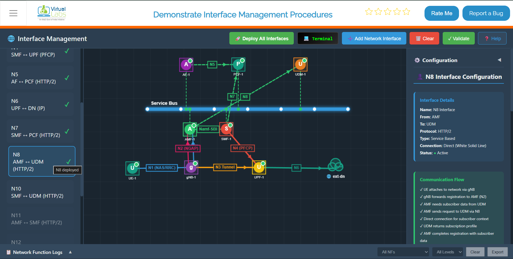
Fig: N8 Interface Deployment
9. Deploy N9 Interface (UPF ↔ UPF)
- Action: Click on "N9" in the left sidebar.
- Observation:
- Canvas: Updates logical connections between distributed UPFs, showing user-plane traffic forwarding paths between the Intermediate UPF (I-UPF) and the PSA UPF.
- Right Panel: Shows "N9 Interface Configuration" (UPF → UPF).
- Logs:
N9 Interface deployed successfully.
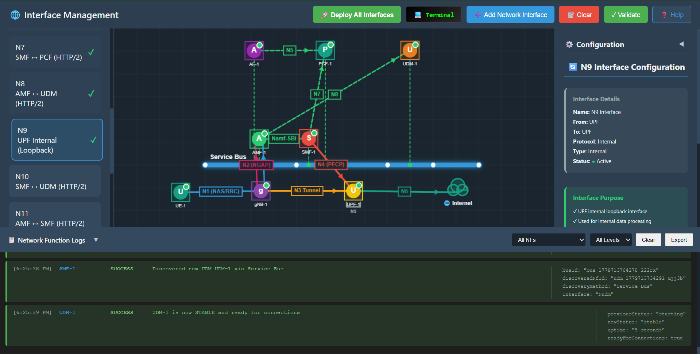
10. Deploy N10 Interface (SMF ↔ UDM)
- Action: Click on "N10" in the left sidebar.
- Observation:
- Canvas: Updates logical connections for SMF to access Subscription specific data.
- Right Panel: Shows "N10 Interface Configuration" (SMF → UDM).
- Logs:
N10 Interface deployed successfully.
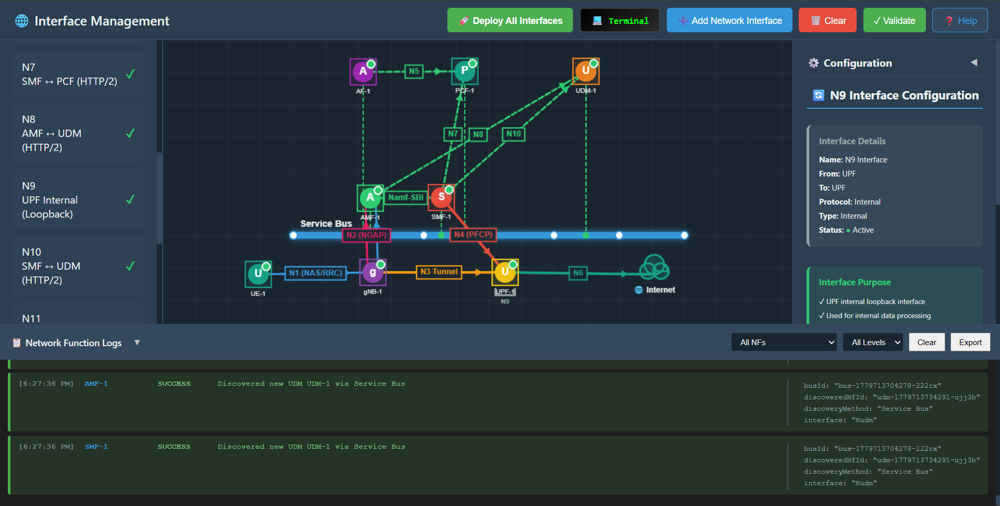
Fig: N10 Interface Deployment
11. Deploy N11 Interface (AMF ↔ SMF)
- Action: Click on "N11" in the left sidebar.
- Observation:
- Canvas: Creates a dashed green line between AMF and SMF (SBI).
- Right Panel: Shows "N11 Interface Configuration" (AMF → SMF).
- Logs:
N11 Interface deployed successfully.
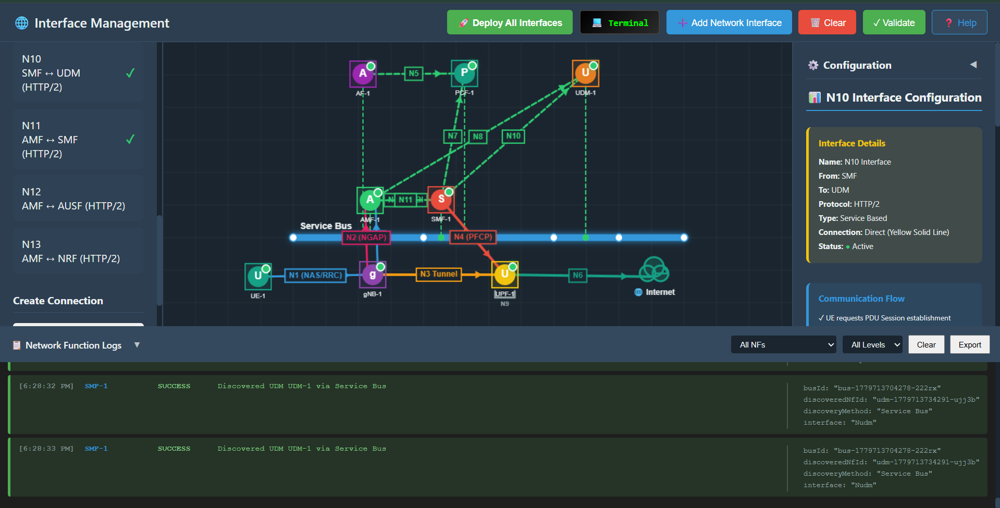
Fig: N11 Interface Deployment
12. Deploy N12 Interface (AMF ↔ AUSF)
- Action: Click on "N12" in the left sidebar.
- Observation:
- Canvas: An AUSF (Authentication Server Function) appears and connects to the Service Bus.
- Right Panel: Shows "N12 Interface Configuration" (AMF → AUSF).
- Logs:
N12 Interface deployed successfully.
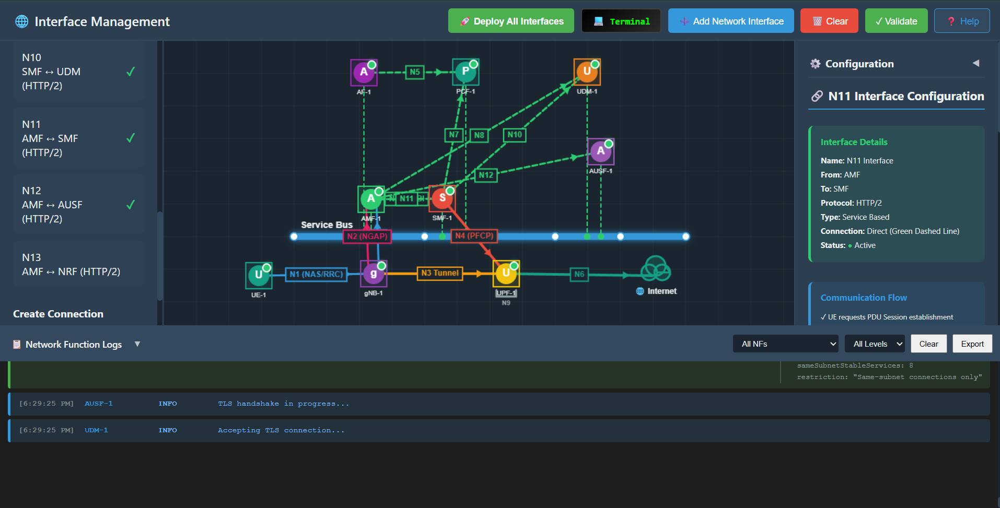
Fig: N12 Interface Deployment
13. Deploy N13 Interface (AMF ↔ NRF)
- Action: Click on "N13" in the left sidebar.
- Observation:
- Canvas: An NRF (Network Repository Function) appears and connects to the Service Bus.
- Right Panel: Shows "N13 Interface Configuration" (AMF → NRF).
- Logs:
N13 Interface deployed successfully(AMF discovers SMF/UDM via NRF).
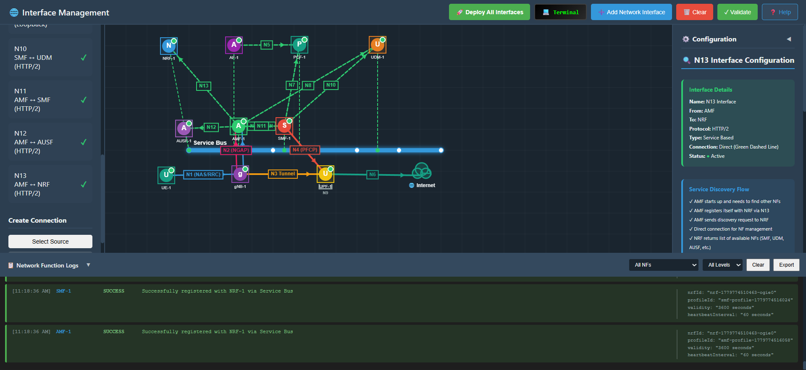
Fig: N13 Interface Deployment
Deploy Network Interface (Automatic)
Click the "🚀 Deploy All Interfaces" button on the top toolbar.
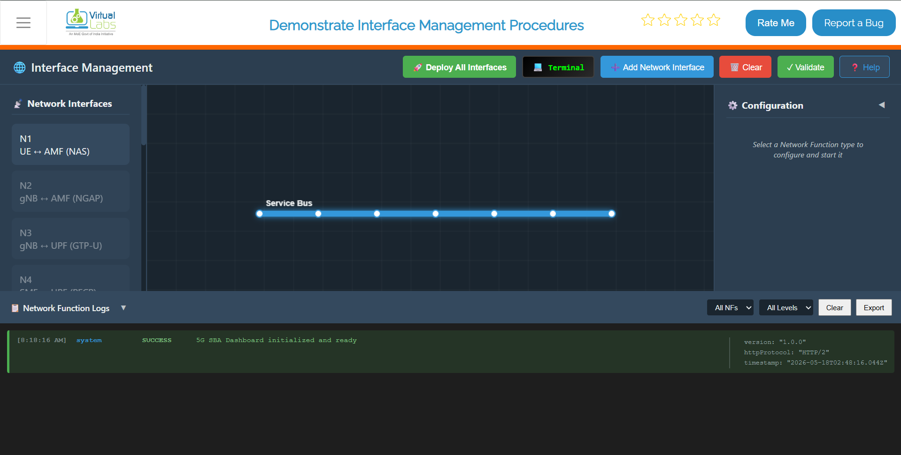
Fig:Core Network Deployment
Deploy All Interfaces button on the top toolbar initiating the automated sequential deployment of all N-interfaces.
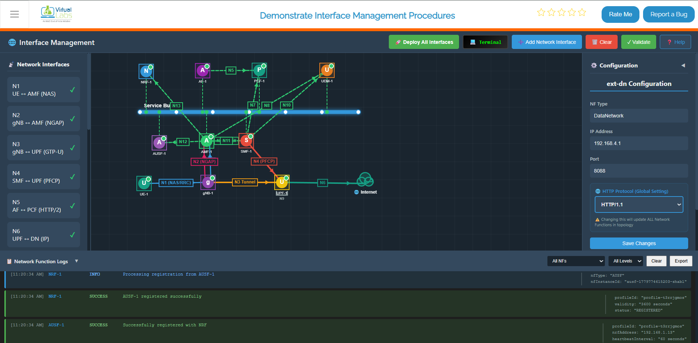
Fig: Core Network Deployed
All N-interfaces fully deployed with the complete 5G topology visible on the canvas, showing all network functions (AMF, SMF,UDR, NSSF, UPF, UDM, AUSF, PCF, AF, NRF) connected via the Service Bus
Deploy 5G Network Functions (Docker-Terminal):
Click on the Terminal button to open the terminal then from the project root directory, execute the deployment commands in the following sequence:
Step 1: Deploy Core Network Functions
Execute the following command to start all core network components (AMF, SMF, UPF, NRF, UDM, AUSF, PCF, AF, etc.) in detached mode:
docker compose -f docker-compose.yml up -d
Command Details:
-f docker-compose.yml: Specifies the compose file containing the core network configurationup: Creates and starts containers defined in the compose file-d: Runs containers in detached mode (background), allowing you to continue using the terminal
What Gets Deployed: This command initializes the foundational service bus and launches all core 5G network functions:
- AMF (Access and Mobility Management Function)
- SMF (Session Management Function)
- UDR (Unified Data Repository)
- NSSF (Network Slice Selection Function)
- UPF (User Plane Function)
- NRF (Network Repository Function)
- UDM (Unified Data Management)
- AUSF (Authentication Server Function)
- PCF (Policy Control Function)
- AF (Application Function)
Verification: Wait 10-15 seconds for all containers to initialize. You should see messages indicating successful creation and startup of each component.
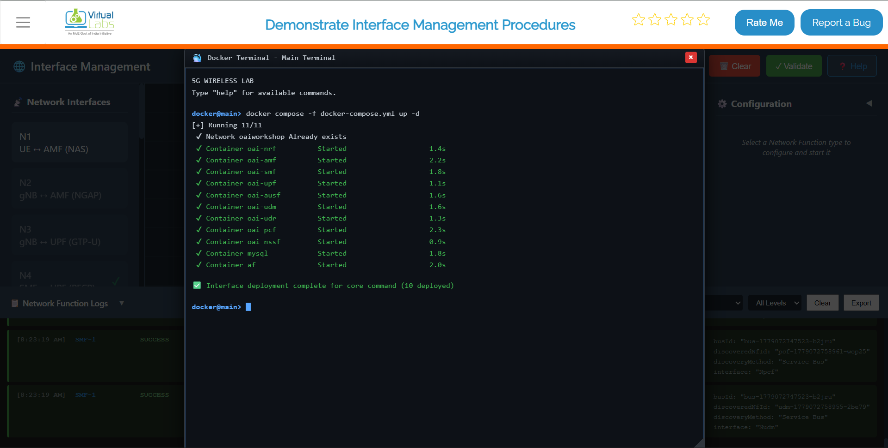
Fig: Terminal output showing core network deployment initialization
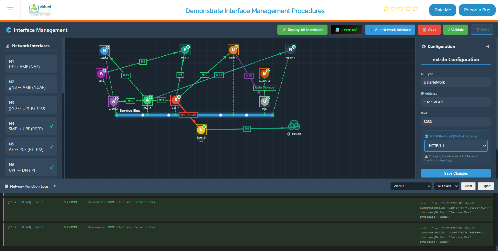
Fig: Successfully deployed core network with all service bus connections established
If you deploy the core using the terminal, it will also create two additional network interfaces:
- N22 between AMF and NSSF
- N35 between UDM and UDR
Step 2: Deploy gNB (Base Station)
Once the core network is running and stable, deploy the gNB (base station) services:
docker compose -f docker-compose-gnb.yml up -d
Command Details:
-f docker-compose-gnb.yml: Specifies the gNB-specific compose file- Uses the same network created by the core network deployment
- Automatically connects to the core network's service bus
What Gets Deployed: This command launches the RAN (Radio Access Network) layer:
- gNB (5G Base Station) container
- RIC (RAN Intelligent Controller) services
- Radio interface handlers for N1, N2, and N3 connectivity
Network Connections Established:
- N1 Interface (UE ↔ AMF): Via gNB to AMF communication
- N2 Interface (gNB ↔ AMF): NGAP protocol for control plane
- N3 Interface (gNB ↔ UPF): GTP-U tunnels for data plane traffic
Verification: Wait 5-10 seconds for the gNB to establish connections with the AMF and UPF. Check that heartbeat messages are exchanged with the core network.
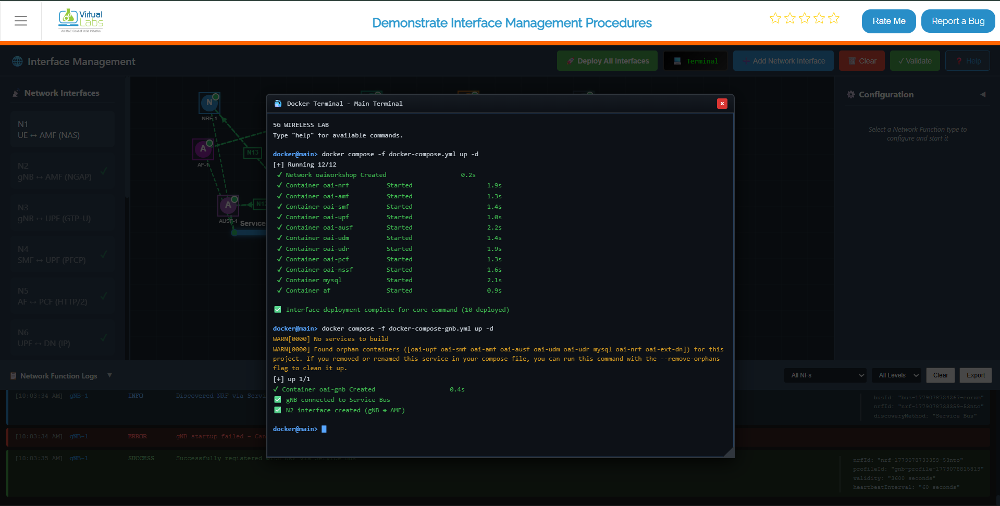
Fig: Terminal output showing gNB deployment and network connections
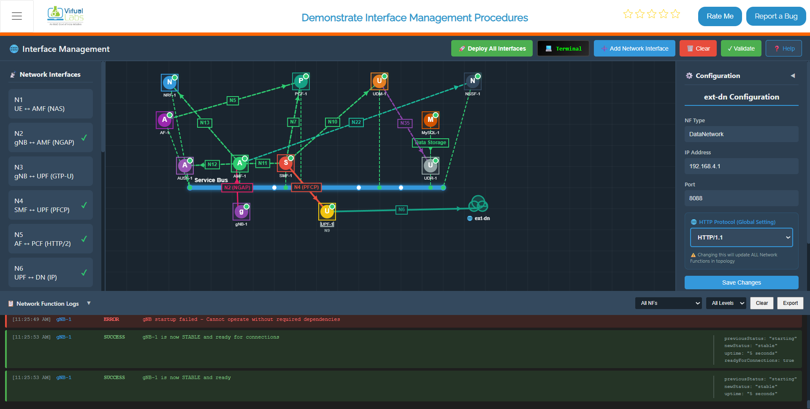
Fig: gNB fully deployed with established N1, N2, N3 interface connections to core network
Step 3: Deploy UE (User Equipment)
After the gNB deployment is complete and verified, deploy the UE (User Equipment) services:
docker compose -f docker-compose-ue.yml up -d
Command Details:
-f docker-compose-ue.yml: Specifies the UE-specific compose file- Configures one or more UE instances to connect to the gNB
- Establishes end-to-end connectivity with the entire 5G network
What Gets Deployed: This command launches one or more user equipment instances:
- UE Container(s) - Emulated user devices with 5G capabilities
- RRC (Radio Resource Control) handlers
- NAS (Non-Access Stratum) protocol stack for control messages
- IP Stack for data packet routing
Verification: Wait 15-30 seconds for the complete registration and session establishment process to complete. The UE should successfully:
- Register with the AMF (N1 messaging)
- Establish a PDU session with the SMF (N11 messaging)
- Connect through the UPF to the data network (N6 path)
This completes the end-to-end 5G network topology with all N-interfaces operational.
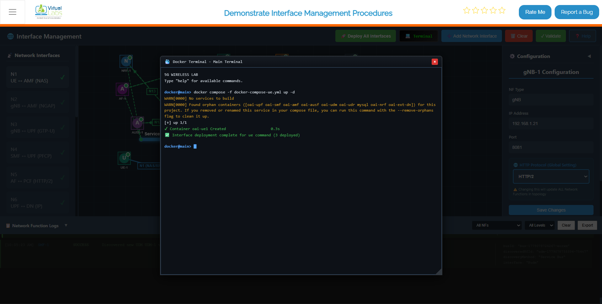
Fig: Terminal output showing UE deployment and registration process
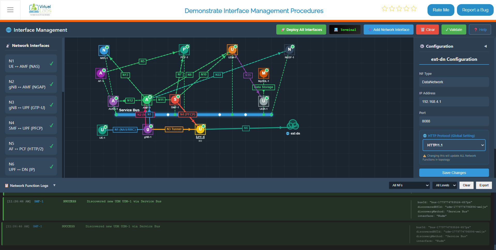
Fig: Complete 5G network operational with UE successfully registered and connected to data network
Verify and Monitor Deployed Services
After completing all three deployment steps, verify that all containers are running correctly and monitor their status.
Step 1: List All Running Containers
To verify that all containers are running successfully, execute:
docker ps
Expected Output: This command displays a table with columns:
CONTAINER ID: Unique identifier for each containerIMAGE: The Docker image each container is running fromCOMMAND: The entrypoint commandCREATED: When the container was createdSTATUS: Current state (e.g., "Up 5 minutes")PORTS: Published ports (if any)NAMES: Human-readable container names
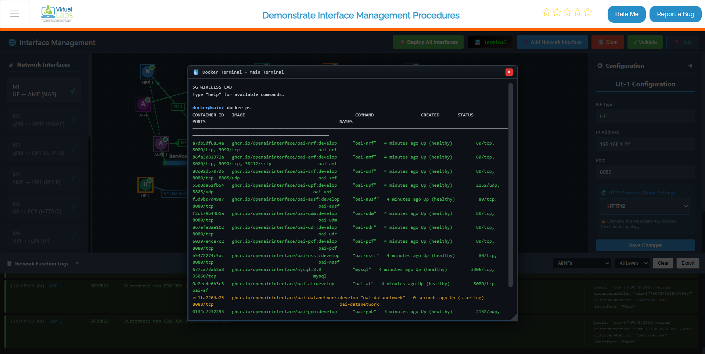
Fig: Docker PS command output showing all deployed 5G network containers in running state
Step 2: Continuously Monitor Core Network Status
To continuously monitor the status of the core network containers and their health, use:
watch docker compose -f docker-compose.yml ps -a
Command Details:
watch: Refreshes the output every 2 seconds (use-n 5to change interval to 5 seconds)docker compose ps -a: Shows status of all services in the compose file- Press
qto exit the watch mode
What Each Column Shows:
NAME: Service name from the compose fileCOMMAND: Startup command for the serviceSTATE: Running, Dead, Exited, etc.PORTS: Port mappings and protocolsSTATUS: Health status and uptime
Exit Watch Mode:
Press Ctrl+C on Windows or Mac to stop the continuous monitoring.
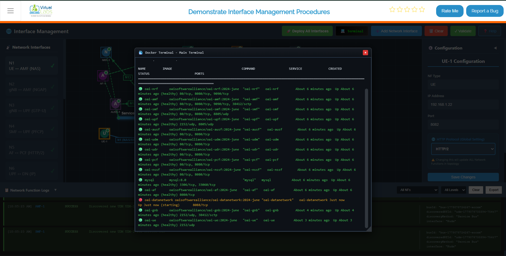
Fig: Continuous monitoring view of core network services with live status updates